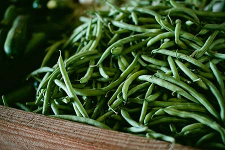
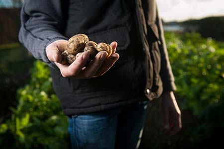
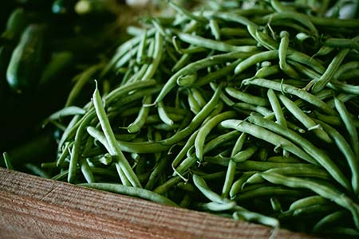
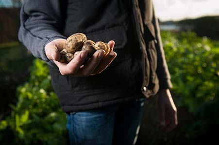
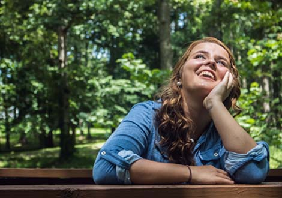
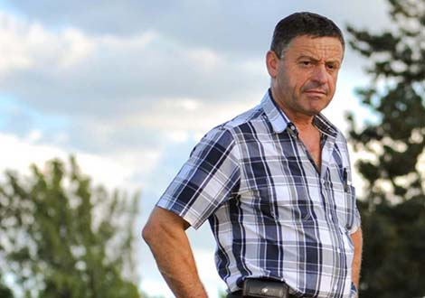

- ABOUT
- SHOP
- EXPLORE

- JOBS
- NEWS
- CONTACT
ABOUT US
Cheryl Carmona and Aliza Sollins started Boone Street Farm in Fall 2010, in the East Baltimore Midway neighborhood out of the simple desire to have a large space to grow fresh produce. The project quickly blossomed and Boone Street Farm became a space for children to play, neighbors to garden, fellow gardeners to cultivate, local artists to create art, neighbors to gather, and more!
 



-

providing free community garden space and advice.
-

Partnering with Cecil Elementary to host an after school garden club.
-

providing an opportunity for Baltimore city students to earn their required community service hours.
-

Creating value-added products such as green tomato salsa, vegetarian sesame-noodle salad, banhmi sandwiches, bloody marys, and pickles to earn donations for future farm needs.
-

Cleaning up trash and painting storm drains.
-

Hiring Baltimore city students through Youthworks and Americrops.
-

Hosting block parties and workshops for our community.
-

Providing free samples at the Maranatha Apostolic Church summer block parties.
-

Growing over 1000 pounds of collards, beets, carrots, herbs, lettuce, tomatoes, peppers, okra, cucumbers, watermelon, greenbeans, and more on the site of a formerly vacant piece of land.
-

Hosting educational workshop on the farm
ACCOMPISHMENTS
MEET OUR TEAM
-

Cheryl Carmona
farm manager
Cheryl Carmona has been gardening in Baltimore for 8 years. Her interest in sustainable agriculture led her to an environmental science Masters program at the University of Maryland, where she studied agricultural soil and watershed sciences. With this training, Cheryl has been working to build an urban agriculture project that uses sustainable practices to raise awareness about the connections between agriculture and the environment, grow healthy food, and develop an urban community around agriculture.
-
Dana Rushovich
production manager
Dana was initially exposed to urban agriculture while studying Environmental Science and Policy at University of Maryland. Through various volunteer work and involvement with sustainability initiatives on campus she became passionate about sustainable agriculture and the local food movement. Upon graduating in May 2013 she did a three month apprenticeship at Piedmont Biofarm in Pittsboro, North Carolina before starting at Boone Street Farm in September 2013.
-
Andrew Hazen
farm intern
Andrew Hazen is originally from Nashville, Tennessee, but his family has lived in Baltimore for over a hundred years. He discovered his love of agriculture shortly after graduating high school, and worked on a small farm in Tennessee for several summers between attending college in Portland, Oregon. He recently completed six months of working on a small livestock farm, and moved to Baltimore in January.
-

Kimberly Meistrall
MICA france-merrik fellow
Kimberly Meistrell is a senior Graphic Design major with a concentration in Sustainability and Social Practices at the Maryland Institute College of Art. She is helping to lead Boone St Farm's Garden Club this year through her France-Merrick Fellowship project Food Is, a year-long exploration of food sustainability that encourages individuals to consider their relationship to food through the act of gardening, cooking, and art-making.
-

Patrick Baron
americorps volunteer
Patrick Baron is a Baltimore native and is in his last year of a PhD program at the Johns Hopkins School of Public Health. Patrick is a doctoral fellow and a researcher at the Center for a Livable Future, an research and advocacy organization that focuses on the intersection of food systems, public health and the environment.
-
Matt Nickelson
farm intern
My name is Matt Nickelson. I am a junior at the University of Baltimore, studying environmental sustainability. Ever since I learned about urban farming and the techniques involved I have been fascinated by it. I have a strong passion for helping out the community and that is one of the many things I hope to accomplish well interning at Boone Street Farms.
FOLLOW US